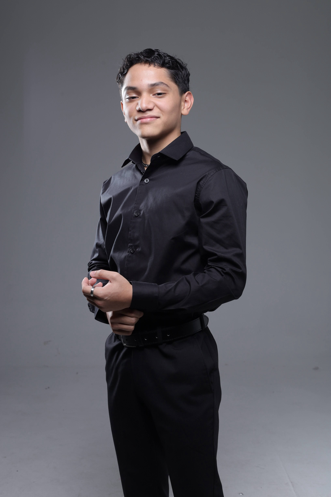
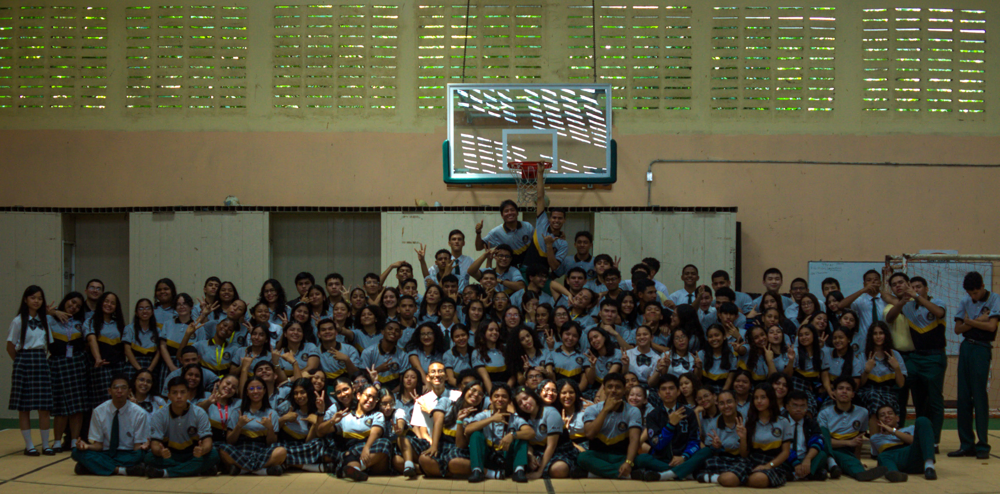
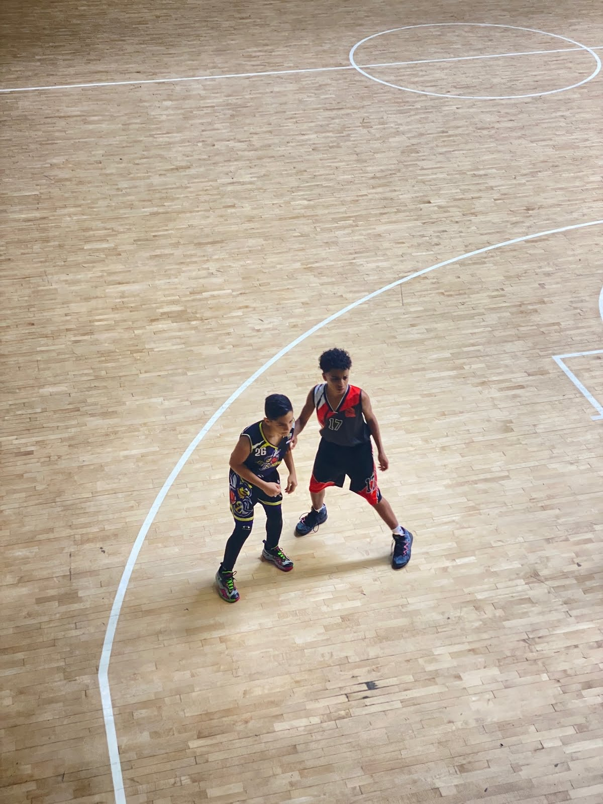

01 / C# · CONSOLE GAME
Street Lights
My first programming project: answer five yes-or-no questions to cross five streets and reach your destination. A hands-on introduction to logic and user input.
View source ↗FROM PANAMA · BASED IN FINLAND
Hi, I’m Josué Morales. An IT student learning to turn ideas into useful things — through code, creativity, and a little persistence.
Learning in public.
Building with intention.

01 — THE PERSON BEHIND THE WORK
Moving from Panama to Finland meant starting over. It also gave me the chance to build the future I had imagined.
I’m studying Information Technology at Centria while balancing work and learning. My first IT internship taught me how much I enjoy solving practical problems with a team. Today, I’m developing my programming skills and looking for opportunities to contribute, ask good questions, and keep growing.
02 — SELECTED WORK
01 / C# · CONSOLE GAME
My first programming project: answer five yes-or-no questions to cross five streets and reach your destination. A hands-on introduction to logic and user input.
View source ↗02 / MARKDOWN · DOCUMENTATION
A learning project exploring Markdown fundamentals. Practicing how to structure information, explain ideas, and write documentation that is easy to follow.
Read the project ↗03 — LEARNING BY DOING
EDUCATION / FINLAND
Studying Information Technology in Kokkola, building a foundation for a career in technology while supporting my studies through work.
EXPERIENCE / FINLAND
Kitchen work, inventory organization, and Excel tracking. I have also contributed website updates and social content — learning to be adaptable and dependable in a busy team.
Visit Humo ↗IT INTERNSHIP / PANAMA
Worked alongside the IT team during a school internship, applying classroom knowledge in a professional setting and learning from people with practical experience.
WHERE IT STARTED / PANAMA
A high school education focused on technology, lasting friendships, and the first spark of curiosity that brought me here.

My school class in Panama. A chapter I’ll always carry with me.
04 — BEYOND THE SCREEN
Basketball taught me discipline. Photography taught me to notice. Cooking reminds me that making something is even better when you can share it.



05 — WHAT’S NEXT?
Have an opportunity, a project, or a question? I’d love to hear from you.